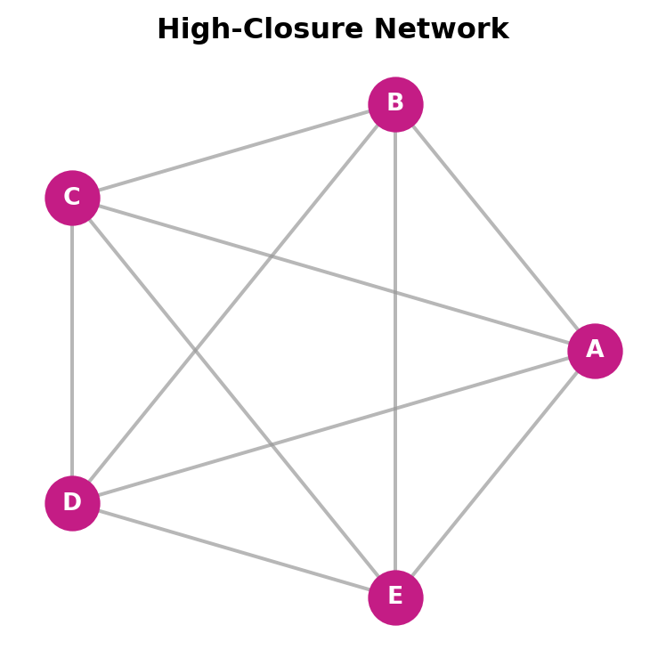

Code
import networkx as nx
import matplotlib.pyplot as plt
# Color palette: black, magenta, gray
BLACK = '#000000'
MAGENTA = '#c41c85'
GRAY = '#999999'
# Create a fully connected network
G = nx.complete_graph(5)
labels = {i: chr(65+i) for i in range(5)} # A, B, C, D, E
fig, ax = plt.subplots(figsize=(4, 4))
pos = nx.circular_layout(G)
nx.draw_networkx_edges(G, pos, edge_color=GRAY, width=1.5, alpha=0.7, ax=ax)
nx.draw_networkx_nodes(G, pos, node_color=MAGENTA, node_size=500, ax=ax)
nx.draw_networkx_labels(G, pos, labels, font_color='white', font_weight='bold', font_size=10, ax=ax)
ax.set_title('High-Closure Network', fontweight='bold', color=BLACK)
ax.axis('off')
plt.tight_layout()
plt.show()